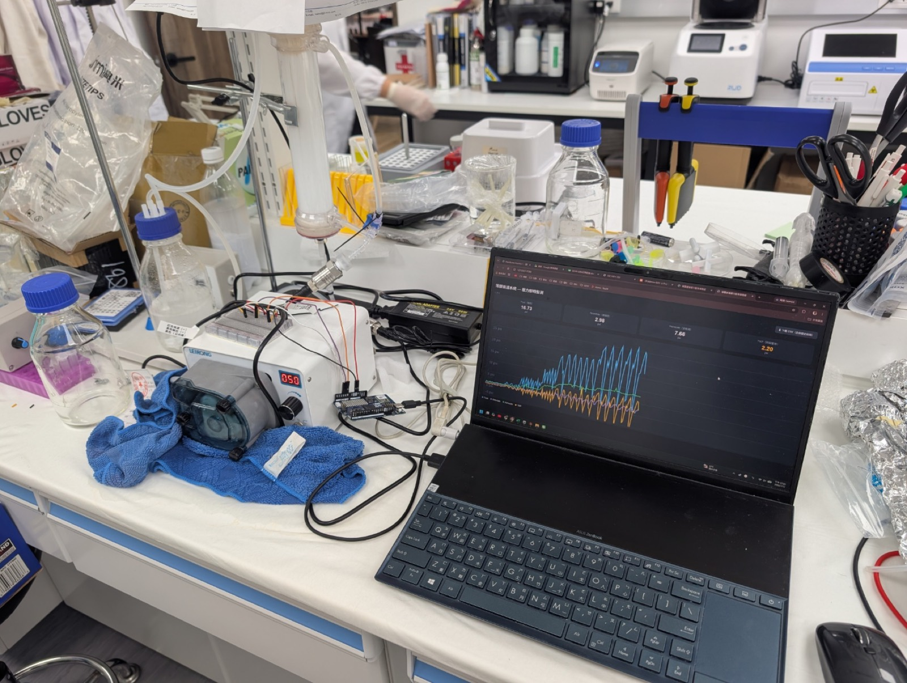
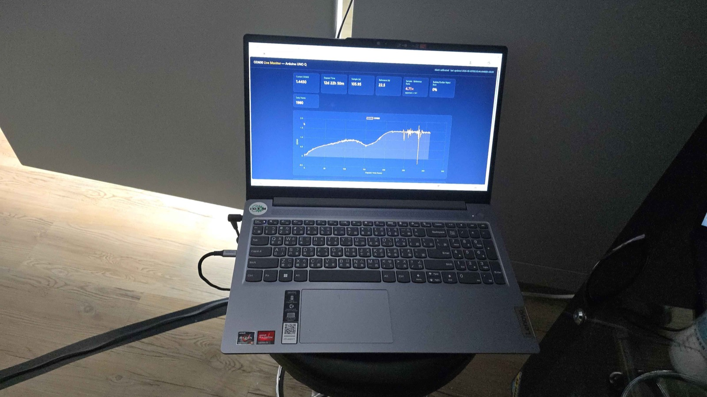
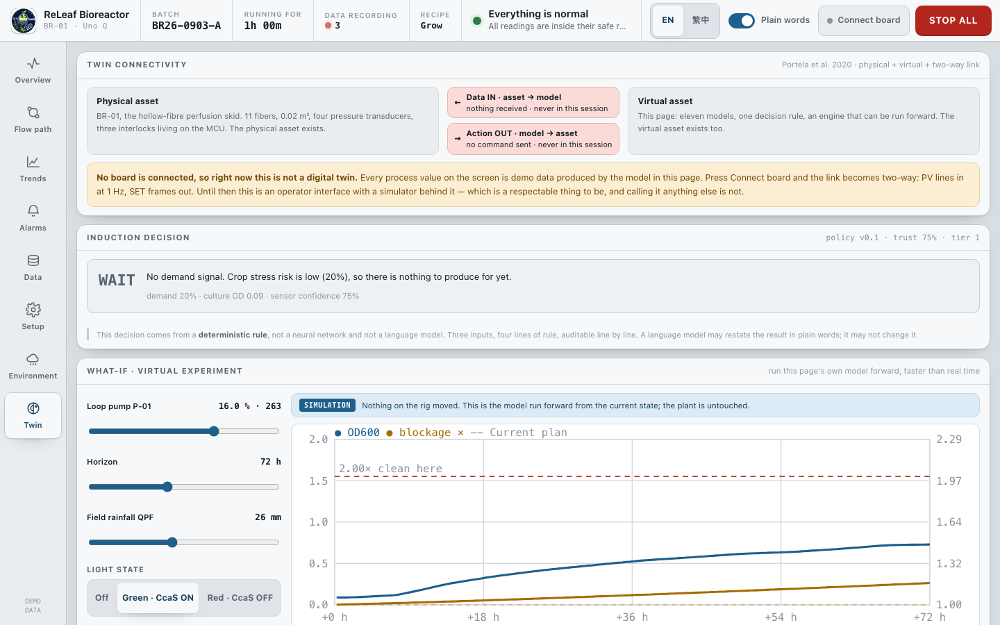
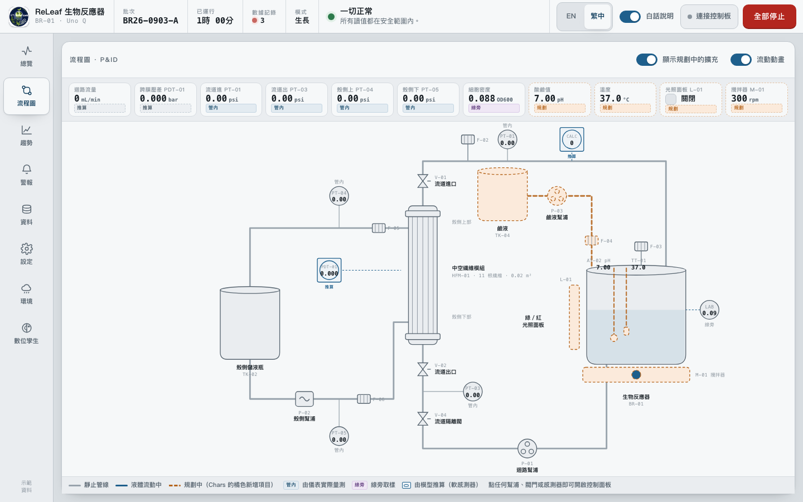

Photograph: a laptop on a lab bench running the OD600 live monitor, beside a breadboard, an Arduino, a peristaltic pump and two media bottles.
Software
Eleven models, two of them calibrated, and a two-way link that exists only while the cable is in
- Drawing
- Software · BR-01 operator interface
- Status
- Built, documented, unvalidated
- Licence
- MIT
- Interface
- 0906UI.html · 4,165 lines
The two-way link is built, and the sentence we will defend still refuses to say “we built a digital twin”
This sheet states the weakest part of the page’s own claim first, because that is the part a judge finds anyway. The connection between the reactor and the software is real: sensor lines come in at 1 Hz and command frames go out. But of eleven models, two are calibrated and none is validated against data it was not fitted to. So the defensible sentence is not the short one.
Against the nine-step build list of Portela et al. [4] the project scores one step done, five partial and three not done. The three not done are model validation, model predictive control, and integration into a wider data strategy. Sheet 06 scores that list line by line and puts the connectivity triad under a switch you can throw. Sheet 07 lists the eighteen measurements the wet lab still owes the models.
| Claim | Where it is checkable |
|---|---|
A working operator interface, offline, in two languagessoftware/ui/0906UI.html |
The file is in this wiki. Open it: eight views, five one-touch recipes, an alarm model, a batch recorder and a serial link, with no build step and no network call. |
| Every number on the screen carries its provenance | Ten process channels, classified on their face: four IN-LINE, one AT-LINE, three SOFT, two PLANNED. Drawn on Sheet 03 and listed on Sheet 04. |
| Bidirectional connectivity, implemented | The firmware has emitted PV lines at 1 Hz since day
one; since 6 September 2026 the page parses them and
measured values overwrite the model. SET frames go out on
every state change. True only while a board is plugged in, and the
interface says which. |
| Two models calibrated against our own measured data the pump curve and the membrane pressure drop |
Sheet 05, models M1 and M2, with the fit statistics and the range each is valid over. |
| No model validated against held-out data | Seven of the eleven rows in the interface’s own model register read NOT VALIDATED, on the table rather than in a footnote. Sheet 05. |
| One result that is genuinely demonstrated 26.7 h of warning before an instrument failed |
Trained on the first 120 h of the 434-hour run only, alarm limit fixed before any result was inspected. Sheet 07. Two events in one run, so no error rate is reportable. |
Software is not one of our three Special Awards, and the page is written to its rubric anyway
ReLeaf’s three Special Award selections are Measurement, Hardware and Integrated Human Practices. Software is not one of them and we are not claiming it as one. This page exists because the software carries a large part of the Measurement and Hardware cases, and because Project ballot question 4 asks how well engineering principles were used. It is written to the Best Software rubric because that rubric is the right checklist for judging whether a tool is documented, reusable and validated, whether or not the award is being contested. The six aspects are scored on Sheet 09, including the one we fail outright.
A reactor standing in a shed has no technician on call, so the interface has to be one
Biomanufacturing is gated. To obtain a useful protein you buy it from somebody who owns a fermenter, a cold chain and a registration dossier. ReLeaf’s answer is a reactor a grower can own and run beside the crop. That answer creates a software problem immediately, and it is not the usual one. Commercial bioprocess control software assumes a trained operator, a validated facility and a technician on call. A reactor in a shed on a smallholding has none of those.
The interface is written for the harder of its two users, and it is written twice
A student operator can be told what a trans-membrane pressure is. A micro-farmer in a 產銷班, a local production-and-marketing group, cannot be assumed to have been told anything, and will be looking at the screen because something is already wrong. So every reading carries three things at once: the number, its analog context — the normal band, both alarm limits, the setpoint — and a plain-language line underneath saying what the reading means and why it is there. The plain-language layer can be switched off for expert use. The whole interface exists in English and Traditional Chinese, and the Chinese is a real translation written for a Chinese-reading grower rather than a gloss of the English.
Eight views, five recipes, and a badge on every number saying whether it was measured
- It shows the reactor. Eight views: Overview, Flow path (a real P&ID), Trends, Alarms, Data, Setup, Environment and Twin. Four display levels in the ISA-101 sense [8], from a single overview tile down to a per-device faceplate. The Twin view carries a connectivity ledger, a what-if runner, a model register, the nine-step checklist scored on Sheet 06, a quality-by-design frame, the induction decision, the lead-time chain and the yield ceiling.
- It runs a what-if before you commit to it. The Twin view runs the page’s own model forward, faster than real time, from the current state under a changed pump setting, light state or rainfall. It uses the same engine as the live view, not a second one, so what the operator sees predicted is the model that would run the plant. It snapshots the state, runs on throwaway history and log containers, and restores every field afterwards. Recording is off during the run, no alarm fires, and no command goes out.
- It drives it. Pump outputs, stirrer speed, valve positions and the green/red light panel, sent to the board as one serial line per state change. Five one-touch recipes — Idle, Grow, Induce, Perfuse and Clean — each of which sets every actuator correctly in one press.
- It records it. One row per 30 minutes of process time, exported
as a three-sheet
.xlsx(Readings, Run info, Alarm log) or a UTF-8 CSV with a byte-order mark so Excel opens Chinese headers correctly. The workbook writer is a small ZIP and OOXML encoder inside the page, so there is no library to install and no upload. - It says which numbers are measurements. Every process channel carries its provenance on its face, using the FDA’s PAT classes plus one more for values with no instrument at all. Ten channels: four in-line, one at-line, three soft and two planned. Four of ten numbers on the screen are measurements. The two soft sensors are drawn on the P&ID as the ISA-5.1 symbol for a function performed in software, a circle inscribed in a square, because a different shape and not just a different colour is what stops an operator seeing instruments and inferring instruments.


The interface itself is checked into this wiki, not linked across to another host: open the 6 September build. Process values are simulated so it can be demonstrated with no rig attached, and it says so on its own face. The same file is published from the working repository at timmy97-tw.github.io/releaf-wiki-software.
Five layers, and the interlocks sit on the microcontroller so a closed browser tab cannot move a pump
Choose a layer or a road. The drawing lights what connects to it, and the entry appears here. With scripts off, every entry is on the page below.
- Field
- Four pressure transducers PT-01, PT-03, PT-04 and PT-05 on 0 to 30 psi analog inputs. Three manual three-way valves in series on the lumen loop. Two peristaltic pumps. A hollow-fibre module: PES, 0.2 µm, 0.02 m², 11 fibres, 1.0 mm bore, 0.60 m effective length. Planned and drawn dashed orange, not built: pH probe AT-02, temperature probe TT-01, base dosing P-03 with TK-04, the green and red light panel L-01, and stirrer M-01.
- MCU
- Arduino Uno Q, STM32U585 side. Owns the pumps, the valves, a
1 Hz sensor scan and all three interlocks. 146 lines of C, in
firmware/releaf_br01.ino. Serial at 115200 baud, newline terminated. In:SET P01=12.0 P02=0.0 P03=0.0 STIR=300 LIGHT=GREEN V=111. Out:PV PH=7.02 T=37.0 PT1=2.69 PT3=1.31 PT4=0.42 PT5=0.93. - Linux
- Arduino Uno Q, Dragonwing side. Serves the page over HTTP, keeps
the data log, holds the Wi-Fi.
python3 -m http.server 8080is the whole server. Serving over HTTP rather thanfile://is what enables Web Serial, so the Connect board button only works this way. Note that it is not on the measurement path: the telemetry goes from the board to the browser directly. - Browser
- The whole application, one HTML file. Vanilla JavaScript, no framework,
no bundler, no dependency. Two builds from one source: a fluid desktop
build for laptops and judging, and a fixed 1024 × 600
kiosk build that scales itself to whatever the 7-inch panel negotiates
over HDMI, generated by
python3 build_kiosk.py. Never edit the kiosk file by hand. - Off-board
- A separate Python stack,
Math Model/releaf-model/, that does the fitting, the identifiability analysis, the transport calculations and the anomaly detection, and emits tagged JSON. It runs on a laptop, not on the board. Everything it produces reaches the interface as a constant, not as a live call. - PT-01 · lumen inlet pressure In-line
- 0 to 30 psi on MCU A1, into the
PVline at 1 Hz. Built and reporting. The interface reports a median over a window rather than an instantaneous reading, because the peristaltic pump pulses. - PT-03 · lumen outlet In-line
- 0 to 30 psi on MCU A2. Sits under the module on the lumen side, where the 2026-08-16 relocation put it. Built.
- PT-04 · shell top In-line
- 0 to 30 psi on MCU A3. Built, and uncharacterised: currently derived from the lumen pump curve, because the shell side has never been characterised on the rig. Experiment E9 fixes it.
- PT-05 · shell bottom In-line
- 0 to 30 psi on MCU A4. Built and uncharacterised, on the same footing as PT-04. Treat both as indicative.
- AT-02 · pH Planned
- An I²C front end into
PV PH=. The probe is not fitted, and the firmware currently declaresfloat ph = 7as a constant. It is not a measurement and the interface labels it Planned on every screen it appears on. - TT-01 · temperature Planned
- A DS18B20 on 1-Wire, pin 2. Not fitted. Firmware constant
float tempC = 25. - OD600 · cell density At-line
- A sample taken off the rig and typed in, tagged LAB on every screen it appears on. The team’s own in-line photometer exists and produced the 434-hour run, but it is a separate instrument and is not wired into this interface. Its log is analysed off-board, which is the dashed leg on the drawing.
- Loop flow Soft
- Read off the measured pump curve, model M1. Tagged CALC and never FT-01, because there is no flow meter anywhere on the skid. It has no root in the field, which is why its road starts at the browser.
- Trans-membrane ΔP Soft
- Mean lumen pressure minus mean shell pressure, computed on the MCU from the four transducers, and the input to the 0.50 bar interlock. An audit on 2026-09-02 found the displayed value not distinguishable from zero under either error model. Experiment E10 zeroes the transducers and repeats it.
- Fouling × baseline Soft
- ΔPnet divided by flow, relative to the clean baseline at 263 mL/min. Clean the module before 2.00×. The rate law behind it is invented, and it drives the only maintenance decision in the product. Experiment E17.
- SET actuator frames Command
- One line per state change, carrying pump outputs, stirrer speed, valve
positions and the light state. Interlock-effective values only:
a pump held off by an interlock is transmitted as
0.0and never as its raw slider position. Green switches the CcaS/CcaR system on in B. subtilis; red switches it off. - Batch record Carriage
- One row per 30 minutes of process time, exported as a three-sheet
.xlsx— Readings with a unit on every column and numbers stored as numbers, Run info with the rig constants and the pump curve, and the Alarm log — or as a UTF-8 CSV with a byte-order mark so Excel opens the Chinese headers correctly. - Fitted constants Carriage
- The pump curve, the two pressure-drop coefficients, the calibration fit and the trust-layer thresholds all reach the interface as numbers, not as a live call. That is a deliberate limit: the device may have no network, so nothing on screen may depend on a laptop being reachable. It is also why the trust layer is not on the board — the interface uses a hand-written stand-in scoring function, and the code comment says so.
One interlock was deleted rather than left blind, and that is recorded
The interlocks live on the MCU, not in the browser. There are three, and they
override the commanded value on every loop rather than advising it: the three
lumen valves are in series, so any one shut forces the loop pump to zero; a
trans-membrane pressure above 0.50 bar forces it to zero; and no
SET line for 5 seconds forces it to zero. A browser crash, a
closed tab or a dropped Wi-Fi link therefore cannot move a pump or leave one
running. The page is a window onto the controller, not the controller.
The fourth interlock is gone. The dry-running rule went when the tank level sensor LT-01 was removed from the design, because a rule that cannot see its own input is worse than no rule: people keep trusting it. That deletion is written into the equipment register rather than quietly done.
One file with no build step removes the failures that happen in a field and creates the ones that happen at a desk
This looks like a shortcut and is not. Four constraints forced it, and all four come from where the thing has to run.
- The device may have no network. A reactor in a shed has an operator, a screen and a board. Anything fetched from a CDN is a failure mode with no recovery path in the field. There are zero external requests in the file: no font host, no chart library, no telemetry. The team logo is inlined as a base64 data URI.
- The person who has to fix it is a high-school student in two years’ time. A build step is a second thing that can break, and it breaks silently and off-device. Opening one file in an editor and reloading the browser is a repair loop that survives the team that wrote it.
- Reproducibility. The iGEM Software rubric asks for reproducible build and run instructions and pinned dependencies [9]. A file with no dependencies is trivially reproducible: there is nothing to pin and nothing to resolve. This is the one place where the constraint and the rubric agree completely.
- The wiki freeze. iGEM wikis block external font and script hosts. Anything needing a CDN would have to be rewritten before upload anyway.
The cost is real and should be said. 4,165 lines in one file is past the point where a newcomer can hold it in their head, there are no unit tests, and the numbered section banners inside the file are doing the job a module boundary would do in a larger project. We took that trade because the failure modes it removes happen in a field and the failure modes it creates happen at a desk.

Four of the ten numbers on the screen are measurements, and the interface says which four
Four in-line, one at-line, three soft, two planned. Before the 6 September build the interface did not distinguish them, and the P&ID drew four pressure bubbles while leaving loop flow and trans-membrane pressure off the diagram entirely — so an operator saw instruments and inferred instruments. That was the quiet dishonesty in the old drawing.
Every light parameter in the specification is Castillo-Hair’s, and not one of them is ours
The light-induction half of this specification is anchored on Castillo-Hair
et al. 2019 [1], which characterised the CcaS/CcaR green-light
system using the Light Plate Apparatus of Gerhardt et al. 2016 [2].
That paper is the reason the specification can be written at all: it gives a
steady-state transfer function with fitted parameters and a kinetic model with
measured time constants, so light intensity in and promoter output out is a
defined mapping rather than a hand wave. It is also literature, not our data, and
every row taken from it is marked lit.
The transfer function, verbatim. Steady state is a Hill function,
y = y0 + Δy · xn / (xn + K½n),
where y is sfGFP fluorescence in MEFL and x is light intensity in
µmol·m⁻²·s⁻¹. The response to a step change in intensity is a
third-order delayed differential system: production rate, to immature reporter,
to mature reporter. Both are given in Castillo-Hair’s own appendix, the
copy of which this project holds at
Opto_Math/2019_Castillo_Math.pdf.
There is a second, narrower discrepancy in our own records and it is unresolved. Our LEDs are 520 nm. The CcaS absorption maximum is 535 nm [3] and the source paper’s K½ is quoted at 526 nm. The correction between those three wavelengths has not been made. It is written here rather than quietly resolved in whichever direction suits us.
3.1
Twelve light-induction inputs, of which six are literature and none is measured here
Castillo-Hair 2019 · Gerhardt 2016
Blocked onL-01 does not exist. There is no calibrated photon flux anywhere in the project.
| Variable | Symbol | Unit | Range | Source | Status |
|---|---|---|---|---|---|
| Green photon flux at the culture | I_G | µmol·m⁻²·s⁻¹ | 0.1 – 50 | Light panel L-01 duty cycle, or the LPA | not built — L-01 does not exist, and no calibrated flux exists in the project |
| Green wavelength | λ_G | nm | 520 | LED specification | offset unreconciled — ours 520 nm, CcaS maximum 535 nm, source K½ at 526 nm |
| Red photon flux (reset) | I_R | µmol·m⁻²·s⁻¹ | 20 | Light panel L-01 | not built |
| Red wavelength | λ_R | nm | 660 | LED specification | offset unreconciled — source paper uses 672 nm |
| Duty cycle of the light program | D | % | 0 – 100 | Recipe or schedule chosen in the interface | uncharacterised — pulsatile versus static induction is known to change output; we have measured nothing |
| Induction onset | t_on | h of batch | — | Operator, recipe, or the Twin view’s policy | policy exists, unvalidated |
| Hill coefficient | n | — | 1.88 ± 0.16 | Castillo-Hair 2019 [1] | lit — borrowed, not ours |
| Half-maximal intensity | K½ | µmol·m⁻²·s⁻¹ | 4.66 ± 0.63 | Castillo-Hair 2019, at 526 nm [1] | lit |
| Time to half-on | t½_on | min | 105.1 ± 1.5 | Castillo-Hair 2019 [1] | lit |
| Time to half-off | t½_off | min | 74.97 ± 0.39 | Castillo-Hair 2019 [1] | lit |
| Basal output | y₀ | MEFL | 1997.6 | Castillo-Hair 2019 [1] | lit |
| Output span | Δy | MEFL | 106740.5 | Castillo-Hair 2019 [1] | lit |
3.2
Ten reactor inputs, four of them built and reporting, two of them firmware constants
MCU · 1 Hz scan
ResultFour pressure transducers are on the rig and streaming. pH and temperature are declared as constants in 146 lines of C.
| Tag | Variable | Unit | Path into the software | Status |
|---|---|---|---|---|
PT-01 | Lumen inlet pressure | psi (0–30) | MCU A1 → PV line, 1 Hz | built |
PT-03 | Lumen outlet pressure, under the module | psi (0–30) | MCU A2 → PV | built |
PT-04 | Shell top pressure | psi (0–30) | MCU A3 → PV | built, uncharacterised — derived from the lumen pump curve; the shell side has never been characterised |
PT-05 | Shell bottom pressure | psi (0–30) | MCU A4 → PV | built, uncharacterised |
AT-02 | pH | pH | I²C front end → PV PH= | planned — the firmware declares float ph = 7. Not a measurement, and labelled Planned |
TT-01 | Temperature | °C | DS18B20 1-Wire, pin 2 | planned — firmware constant float tempC = 25 |
| — | Optical density at 600 nm | AU | Sample taken off the rig and typed in. Tagged LAB on every screen | manual — our own in-line photometer produced the 434-hour run but is a separate instrument, not wired in |
| — | Photometer reference channel | lux | Photometer log, offline | offline — this is the channel that caught the instrument degrading. See Sheet 07 |
| — | Field weather | various | A manual snapshot pasted into the source, flagged live: false | not live — there is no weather API call, and the Environment view is honest about it on its face |
| — | Operator commands | %, rpm, open/shut | Sliders, valve toggles, recipe buttons, light state, plain-words toggle, language | built |
3.3
Eleven outputs, and the two that reach an actuator carry interlock-effective values only
Browser → MCU → field
RuleA pump held off by an interlock is transmitted as 0.0, never as its raw slider position.
NeverThe induction decision advises. It never actuates.
| Output | Unit | Produced by | Consumer |
|---|---|---|---|
| Actuator command line | — | One SET line per state change, interlock-effective values only | MCU |
| Pump outputs P-01, P-02, P-03 | % of full scale | PWM, clamped to the 24 % top of the measured calibration range | Pumps |
| Light state | OFF | GREEN | RED | Two digital pins. Green switches the CcaS/CcaR system on in B. subtilis; red switches it off. | L-01 (planned) |
| Loop flow | mL/min | Read off the measured pump curve. Tagged CALC, never FT-01, because there is no flow meter | Display, fouling model |
| Trans-membrane pressure | bar | Mean lumen pressure minus mean shell pressure, computed on the MCU | Display, interlock at 0.50 bar |
| Fouling resistance ratio | × baseline | ΔPnet divided by flow, relative to the clean baseline at 263 mL/min. Clean before 2.00× | Display, maintenance decision |
| Estimated peptide concentration | nM | The yield chain, model M8. Displayed with the words “a ceiling estimate, not a measured titre” beside it | Twin view |
| Crop stress risk band | low | med | high | Maximum of four indices derived from the weather snapshot | Overview, Environment |
| Induction decision and autonomy tier | HOLD | WAIT | GREEN ON | Demand signal, culture state and a trust score, combined by an explicit rule set | Twin view. It advises. It never actuates |
| Alarm list | P1 | P2 | Band and interlock evaluation. A reading is only wrong if the equipment behind it is supposed to be running | Alarms view, banner |
| Batch record | .xlsx / .csv | One row per 30 min of process time. Three sheets: Readings, Run info and Alarm log. CSV carries a UTF-8 byte-order mark | Excel, the model stack, the notebook |
Eleven models, two calibrated, and none validated against data it was not fitted to
Zobel-Roos et al. [5] sort process models by whether they extrapolate. Rigorous physico-chemical models, which separate fluid dynamics, phase equilibrium and mass transfer and parameterise each independently, are the only class they call predictive in scale, and only once validated. Short-cut models are “non-predictive in scale and dimensions”. Statistical models and neural networks are non-predictive outside their training range. Hybrid models are demoted to non-predictive because of the statistical part, on the argument that combining a mechanistic model with a fitted one reduces predictability to the weakest part. That last position is contested — Portela et al. [4] in the same volume treat hybrid modelling more favourably — so it is presented here as one group’s falsification-based ranking rather than a settled consensus.
Applying that ruler to ReLeaf honestly: most of what the software computes is short-cut or statistical, and therefore does not extrapolate. The one genuinely mechanistic layer, the light-to-promoter transfer function, has not been fitted in our hands at all.
Calibrated is not validated, and the difference is the whole sheet. Sargent’s criterion, quoted by Zobel-Roos et al. [5], is blunt: a model has no benefit in industrial application if it is not validated by comprehensible quantitative criteria. Validation means scoring against data the model was not fitted to. Two of our eleven models are calibrated. None is validated. The pump curve is fitted on the same nine points it interpolates. The membrane pressure drop is fitted on one clean module at one temperature with water. Neither has a held-out set.
The growth curve is the weakest link and it looks like the strongest
A real 434-hour run is genuinely good data. Replaying it is not a model. Everything downstream of the OD channel — readiness, time to ready, the yield estimate and the induction decision — inherits n = 1.
The fouling rate is invented, and it drives the only maintenance decision in the product
The rate law is assumed, with a coefficient chosen so that a demonstration reaches the 2× cleaning threshold at a plausible time. One perfusion run logging membrane resistance against time fixes it, and it is the cheapest high-value experiment on the whole list: E17.
- Calibrated fitted against our own measured data, with no held-out set.
- Literature the parameters are somebody else’s, and are marked as such wherever they appear.
- Not validated never scored against data it was not fitted to.
M1
The pump curve is fitted on the same nine points it interpolates
Short-cut, measured lookup with interpolation
In → predictsP-01 % → mL/min
Valid over0 – 24 %, 0 – 450 mL/min
Validation
Calibrated only. Nine settings, n = 1 each, 22 °C, water. Fitted on the same nine points it interpolates, with no held-out set. 12 % gives 163.3 mL/min at 1.494 psi; the recommended operating point of 263 mL/min sits at 16 %.
Falsified by
Fitting a flow meter and comparing. Running medium instead of water, at a different viscosity.
M2
The membrane pressure drop fits at R² 0.9954, on one clean module at one temperature with water
Short-cut with a mechanistic form, ΔP = aQ + bQ²
In → predictsQ → ΔP_net (bar)
Valid over113 – 263 mL/min, 22 °C, water, clean module
Validation
Calibrated only. ΔPnet(Q) = 2.427 × 10⁻⁴ Q + 4.604 × 10⁻⁷ Q² bar, forced through the origin, R² 0.9954, residual SD 0.0101 bar, background subtracted using a jumper configuration. The rig itself accounts for 46 to 55 % of total ΔP, so without that subtraction the module’s resistance would be overstated about twofold. Two independent routes to wall shear, one needing the fibre count and one not, agree to 2.8 %. No held-out set.
Falsified by
Repeating with a fouled module, or with medium. Net ΔP is 0.90 to 0.96× Hagen-Poiseuille, so a large deviation would say a fibre is blocked.
M3
The displayed trans-membrane pressure is not distinguishable from zero
Direct balance arithmetic
In → predictsPT-01, 03, 04, 05 → TMP
Needszeroed sensors
Validation
An audit of the live dashboard on 2026-09-02 found the displayed TMP not distinguishable from zero under either error model. A ±0.055 bar interval on a 0.30 bar design point is not good enough to control on.
Falsified by
Zeroing all four transducers against atmosphere and repeating: E10.
M4
The fouling rate law is invented, and it sets the only maintenance decision in the product
Short-cut, ratio to a clean baseline
In → predictsΔP_net / Q → × baseline
Fixed byE17, one perfusion run
Validation
None. The module has never been run to fouling. The 2.00× cleaning threshold is a design rule, not an observation, and the coefficient was chosen so a demonstration reaches it at a plausible time. Normalise to 25 °C.
Falsified by
Running a culture to fouling and recording the trajectory. If resistance jumps rather than creeping, a ratio threshold is the wrong instrument entirely.
M5
In the interface the OD trace is a replay of the 434-hour run, not a forward prediction
Unstructured kinetic, mechanistic form, fitted parameters
In → predictst → OD600
Valid overthe exact condition fitted. n = 1
Validation
None. At 37 °C: µ 0.92 h⁻¹ log-linear over 0 to 3 h, 1.31 h⁻¹ logistic, X_max 1.54 OD. At 22 °C: µ 0.0329 h⁻¹ over 7 to 40 h. n = 1.
Falsified by
Whether the 37 °C parameters transfer to 22 °C ambient operation is an open biological question, not an engineering one. A 22 °C batch run alongside a 37 °C one settles it.
M6
The one genuinely mechanistic layer has never been fitted in our hands
Rigorous form, literature parameters · CcaSR steady state
In → predictsI_G → MEFL
Valid over0.1 – 50 µmol·m⁻²·s⁻¹, 526 nm
Validation
Literature only [1]. Not fitted in our hands. No induction curve exists in this project. The parameters are recorded as measured in E. coli and applied to a B. subtilis culture, which is a parameter-provenance assumption and is labelled as one on Sheet 04.
Falsified by
The LPA dose-response, E1. If our n and K½ come back different, every downstream number moves with them, M8 included.
M7
The only latency number the project owns is borrowed
Rigorous, third-order delayed ODE system · CcaSR dynamics
In → predictslight step → output over time
Constantst½_on 105.1 min, t½_off 74.97 min
Validation
Literature only [1]. The 105.1 min is the only latency number the project has, and any page using it must say it is borrowed in the same sentence.
Falsified by
A step change from red to green, sampled every 15 min for 6 h, in our strain and vessel: E5.
M8
The yield ceiling bounds the gap to under two logs, and it is not a prediction
Short-cut stoichiometric bound
In → predictsMEFL → molecules per cell → nM
Statusan upper bound. Four of the five chain steps are tagged verify
The chain
103,006 MEFL under saturating green from Castillo-Hair 2019 figure 5 [1], n = 3, spread 89,769 to 127,842; converted to molecules by the sfGFP-to-fluorescein brightness ratio 0.761, giving 135,323 molecules per cell; multiplied by a cells-per-OD figure of 3.5 × 10⁸ that is literature, not measured by us; at OD 1.4 that lands at 110 nM, with the literature spread on cells per OD alone giving 63 to 157 nM. The published effective dose of BoPep4 is 100 nM [7]. So the ceiling sits at roughly 0.6 to 1.6 times the dose.
Why it is a ceiling
sfGFP is intracellular, stable and never secreted, while BoPep4 is a 23-residue peptide that has to cross the Sec pathway into a broth containing at least eight extracellular proteases. A real yield one to two orders of magnitude below this is entirely reasonable. The value of the number is that it bounds the gap to under two logs rather than five. It must never be quoted as a prediction.
Falsified by
Any measured titre at all: E6.
M9
The weather-derived stress indices have never been checked against a field season
Short-cut empirical correlations, Tetens and Hargreaves
In → predictsweather → heat, VPD, dryness, salinity risk
Valid overTaipei, cool-season crop thresholds
Validation
None. Extra-terrestrial radiation is assumed at 35 MJ for 25° N and tagged as an assumption in the code. The weather itself is a manual snapshot flagged live: false, not a feed.
Falsified by
A season of soil sensor data against the index. The crop thresholds are cool-season-crop values, so a different crop invalidates them directly.
M10
The trust layer found a real instrument failure 26.7 hours early, in the only two events it has seen
Artificial intelligence and statistical · PCA-MSPC plus an autoencoder
In → predictsOD and reference channel → sensor fault versus process event
Evidencen = 2 events, one run
Validation
Trained on the first 120 h of the 434-hour run only, with the alarm limit fixed at the 99.5th percentile of the training score before any result was looked at. It raised a sensor alarm at 216.3 h; the OD channel became unusable at 243.0 h. Lead time 26.7 h. An autoencoder and a PCA-based method tie on the sensor axis; the autoencoder beats it on the process axis, 72.9 % against 11.3 %, which is the only place the neural model earns its keep. A plain threshold on |dOD| > 0.05 fires on 23.1 % of the sensor event and 0.8 % of the process event and cannot tell you which is which. No error rate is reportable from two events. It is also not on the board: it is Python on a laptop, and the interface uses a hand-written stand-in scoring function in its place.
Falsified by
Manufacturing faults deliberately, three of each kind: E13.
M11
The linear calibration beats the Gaussian process inside its range, and falls apart outside it
Statistical · a linear fit in use, a GP with input-dependent noise as the audit
In → predictsraw signal → OD600
Valid overOD < 1.2 by hand, OD < 1.55 learned
Validation
45 paired points, no replicates. The linear fit wins inside its own range, RMSE 0.0235 against the GP’s 0.0254.
Falsified by
Extrapolating it. Past OD 1.2 the same linear fit goes from RMSE 0.0235 to 0.1715, which is exactly what happens in a run nobody is watching.

Bioreactor_UI/data/od600_growth_run_20260721.csv, 221 points
binned to roughly two-hour means from 2,671 valid rows of a 10-minute log,
2026-07-21 03:46 UTC to 2026-08-08 05:58 UTC, at 22 °C.
Nothing is smoothed, resampled or invented. Two features are marked because the
software argument rests on them. The dip between 120 and 160 h is a
process event: the reference channel was healthy at 26.69 lux and
the scatter was normal, yet OD fell through what should have been growth. It is
still unattributed. The scatter blow-up after 240 h is an instrument
event: the reference channel had already stepped from 26.67 to
25.83 lux and then collapsed, and it never recovered, sitting at
21.5 lux after 300 h.
What it does not show: a culture that survived 434 hours.
Unbroken describes the log, not the culture. The method behind the run — the
medium, the inoculum and which compartment the culture sat in — is not written
down anywhere in the project. That is E15.


Four plumbing tests pass, the validation test fails, and that is what a twin-shaped object looks like
Portela et al. [4] define a digital twin as three things together: the physical asset, the virtual asset, and the bidirectional connectivity between them that enables continuous communication, data and information exchange, and implementation of the twin-induced actions. Gargalo et al. [6], in the same volume, draw the boundary that separates a twin from a shadow, and it is about direction of dataflow: in a shadow the flow from physical to digital is automated and the flow back is not; in a twin both are. Collapsed into five yes-or-no tests, four of them are about plumbing and can be answered with a cable. The fifth is about experiments and cannot be shortcut.
A physical asset exists
BR-01: the hollow-fibre module, the loop and shell pumps, three valves, four pressure transducers, four sterile filters. Listed with build status in the interface’s equipment register.
Cable outPass Board inPassA virtual asset exists carrying a process model, not just a screen
Eleven models, listed on Sheet 05 and in the interface’s own model register, plus a step loop that can be run forward faster than real time.
Cable outPass Board inPassData flows automatically from the asset into the model
The firmware has emitted PV lines at 1 Hz since day one. The
page never read them until 6 September 2026. It now parses that
stream, and measured pH, temperature and the four pressures overwrite the
model.
Actions flow automatically from the model back to the asset
SET frames are written on every state change, carrying
interlock-effective values only. Same condition as T3: only while a board is
plugged in.
The models are validated against data they were not fitted to
Two models are calibrated, the pump curve and the membrane pressure drop. None is validated. Seven of eleven rows in the model register say so on their face. No cable changes this one.
Cable outFail Board inFailThis is not a digital twin, and not a digital shadow either: with no board attached nothing flows in either direction. The interface says so in a yellow banner on the Twin view rather than leaving a visitor to guess. Every process value on screen is then demo data produced by the model in the page, and the honest description is an operator interface with a simulator behind it, which is a respectable thing to be.
A digital twin at the soft-sensing and virtual-experiment level, with bidirectional connectivity implemented and demonstrable: telemetry in at 1 Hz, command frames out. And T5 still fails. A project that passes the four plumbing tests and fails the validation test has built a twin-shaped object whose predictions nobody should act on. That is the situation we are in, and it is why nothing on this system closes a loop.
What would let us drop the qualifiers: validate two models against data they were not fitted to, the fouling law and the growth model being the two that matter; obtain any assay at all for the critical quality attribute; and measure the end-to-end lead time. Nothing else on the list is close in value.

ReLeaf sits on rung three, and on rung four only while the cable is in
What the system can do at all is a different question from what it is allowed to move. For honesty: none of the source chapters supplies a numbered autonomy ladder. The rungs below are assembled from the volume’s own vocabulary, not quoted from a table.
| Rung | ReLeaf |
|---|---|
| Monitoring | have |
| Soft sensing | have |
| What-if, virtual experiment | have — added 2026-09-06 |
| Bidirectional connectivity | have, only while a board is plugged in |
| Advanced or model predictive control | not built — blocked on the fouling model and on the lead time |
| Autonomous | not built, deliberately — the critical quality attribute is unmeasurable, so there is nothing to close a loop on |
What the machine is allowed to move is a separate table in the interface, gated by a sensor-confidence score, and it is currently pinned at tier 0 or 1 by design.
One done, five partial and three not done, against Portela’s nine steps
Portela notes the nine steps are not entirely sequential, so this is not a progress bar. Note also that the paper contradicts itself on step numbering between its section 2 list and its worked example; the list below is quoted from section 2, which is the canonical one. The same checklist, with the same scores, is a live view inside the interface, so a judge can check it against the running software rather than against this page.
01
The need is stated and narrow, and there is no workshop record behind it
Define the needs and functionalities through multi-disciplinary workshops
The need is stated and narrow: decide when to switch the light green. No workshop record, no user research with an actual grower, and no functional specification.
02
There is no analytic for the product at all, so the one attribute that matters is unmeasured
Develop PAT
Four in-line pressure transducers built, pH and temperature planned, OD at-line only. There is no analytic for the product, in-line or off-line.
03
The split of responsibility is real and documented; the infrastructure has never been validated
Design, implement and validate the DT infrastructure
The Uno Q split is real and documented: Linux serves and logs, the MCU owns the IO and the interlocks. No historian, no time synchronisation, and the infrastructure itself has never been validated.
04
This is the step Portela calls the heart of the twin, and it is the one we have not done
Develop, train and validate the mathematical models
Two models are calibrated. None is validated against data it was not fitted to. Portela calls this the heart of the twin, because the twin’s operational capacity is a strong function of the predictive capability of its models [4].
05
Nothing in the record would survive an ALCOA+ question
Ensure real-time data processing and data integrity
One row per 30 min of process time, units on every column, alarm log exported alongside. No audit trail, no operator identity, no tamper evidence.
06
Nothing optimises anything over a prediction horizon
Build the automation and model predictive control
No model predictive control and no advanced process control. There is a deterministic rule, and the interlocks run on the MCU, but nothing optimises anything over a prediction horizon.
07
The interface is the one of the nine we can claim outright
Design the user interface
ISA-101 high-performance HMI [8], four-level hierarchy, faceplates, a plain-language layer, English and Traditional Chinese, running offline on a 7-inch panel. It is also the step the source volume itself asks for when it says model-based decision-making that the people running the plant cannot understand is unlikely to be supported [6].
08
There is a written audit of ourselves, and no qualification report
Document the efforts
A README, a written digital-twin audit in the repository that scores the project rather than describing it, and the on-screen model register. No model qualification report, no validation protocol, no change control.
09
One HTML file and a folder of CSVs, and no organisation to integrate with
Integrate into a broader digital and data strategy
Portela warns specifically that leaving integration to the end is how components end up impossible to integrate. Honest answer: there is no organisation here to integrate with.

The critical quality attribute is unmeasurable, so the design space is drawn empty
| Link in the chain | ReLeaf | Note |
|---|---|---|
| Risk assessment | not done | None has been done in the Ishikawa, FMEA or risk-priority-number sense. The three interlocks are a control strategy arrived at by engineering judgement, not by risk ranking. The source volume’s warning applies directly to us: risk assessment should not exclude risks based on presumptions [5]. |
| Critical quality attribute | unmeasurable | Defined: BoPep4 concentration in the harvested permeate, at least 100 nM at the point of application, which is the published effective dose against 200 mM NaCl [7]. There is no assay for the peptide, in-line or off-line. This is the largest hole in the whole frame. A secondary attribute, permeate bioburden, is controlled by design through two 0.22 µm filters, which is a design control and not real-time release. |
| Critical process parameters | partial | Five: green-light irradiance and duration; cross-flow through the loop pump, which sets both wall shear and trans-membrane pressure; 37 °C; pH 7.0; and OD at induction. Only cross-flow has calibration data behind it. The other four are setpoints, not controlled variables, until their probes exist. |
| Design space | empty | The tested space on the loop-pump axis is 0 to 24 %, which is the calibration range, and the operating point is 16 % or 263 mL/min. A design space requires a critical quality attribute to risk-assess against, and we cannot measure ours. Passing a tested space off as a design space is the most common way student projects overclaim quality by design. |
| Control strategy | partial | Three MCU interlocks, alarm bands on every tag, five recipes. All protective or preset. None of it closes a loop on a quality attribute, because there is no quality attribute to close on. |
| PAT | partial | Four in-line measurements, one at-line, three soft sensors and two planned instruments. The source volume itself notes that biomass and metabolite concentration are reachable only through a model or a soft sensor [5]. That is the field’s constraint, not only ours. The product assay is the gap that is ours. |
| Real-time release and advanced process control | not done | Neither exists, and neither can exist before a product measurement does. |
On our own 434-hour run, a threshold closed loop is not better than a fixed recipe
Eighteen measurements are missing, and the two cheapest are the two worth doing first
Four things are calibrated, and one result is genuinely demonstrated
The word is calibrated, not validated. Nothing below has been scored against data it was not fitted to.
- The pump curve. Nine settings from 0 to 24 % against measured flow and system pressure drop at 22 °C. 12 % gives 163.3 mL/min at 1.494 psi; the recommended operating point of 263 mL/min sits at 16 %.
- The membrane pressure drop. ΔPnet(Q) = 2.427 × 10⁻⁴ Q + 4.604 × 10⁻⁷ Q² bar, forced through the origin, R² 0.9954, residual SD 0.0101 bar. The rig itself accounts for 46 to 55 % of total ΔP, so without the background subtraction the module’s resistance would be overstated about twofold. Two independent routes to wall shear, one needing the fibre count and one not, agree to 2.8 %.
- Photometer linearity. Against known TiO₂ dose, our instrument gives R² 0.9967 below 30 mg and R² 0.9901 above it. Against a BioDrop below OD 1.2, y = 1.018x − 0.031, R² 0.995, residual SD 0.024. Scored against known dose rather than against each other, the instrument that misbehaves above 30 mg is the BioDrop, R² 0.8501 and residual SD 0.116 against our 0.9901 and 0.0209. An earlier internal report said neither instrument was usable above OD 1.2; that was not accurate enough and has been corrected here.
- That the instrument can say when to distrust itself. Trained on the first 120 h of the 434-hour run only, with the alarm limit fixed at the 99.5th percentile of the training score before any result was looked at, the trust layer raised a sensor alarm at 216.3 h. The OD channel became unusable at 243.0 h. Lead time 26.7 h. An autoencoder and a PCA-based method tie on the sensor axis; the autoencoder beats it on the process axis, 72.9 % against 11.3 %, which is the only place the neural model earns its keep. A plain threshold on |dOD| > 0.05 fires on 23.1 % of the sensor event and 0.8 % of the process event and cannot tell you which is which.


If only two of these are ever done, do E17 and E18
E17, one perfusion run logging membrane resistance against
time, turns the fouling law from an invented assumption into a calibrated
short-cut model, and it unblocks the only maintenance decision in the whole
product. It is the cheapest high-value experiment on the list. E18,
the end-to-end lead time, is what separates a dashboard from a controller:
“when do we switch the light on” means “this long before it is
needed”, and four of the five cells in the interface’s lead-time chain
still read verify. Neither is at the top of the register, because the
register is ordered by how many models each unblocks rather than by value for
effort. Read it as a work list, not a wish list.
E1
Our own Hill fit for CcaSR, in our strain, is the single highest-value experiment on the list
—, µmol·m⁻²·s⁻¹ · n and K½ with confidence intervals
UnblocksM6 and everything downstream of it, M8 included. It also retires the cross-chassis assumption.
The experiment
LPA dose-response. Nine green intensities log-spaced 0.1 to 50 µmol·m⁻²·s⁻¹ around the literature K½ of 4.7, two wells each, red-only and dark controls, three independent runs. Red preconditioning 0 to 3 to 5 h, then green induction to 8 to 10 h while still exponential. Harvest by ice quench at OD 0.08 to 0.15, lyse, normalise load to OD, SDS-PAGE, anti-His₆ immunoblot, densitometry, fit the Hill function. The full protocol is drawn in Figure 13.
E2
Without a calibrated photon flux, every optimiser is turning an unmarked dial
µmol·m⁻²·s⁻¹ · flux at the well and at the vessel wall
UnblocksThe x-axis of E1. Without it the dose-response has no units and cannot be compared to anyone else’s.
The experiment
Buy a PAR or quantum sensor. Measure the output of each LPA well and of the L-01 panel at the vessel, at several duty cycles, and store the per-well calibration file. Saturating targets computed from Castillo-Hair [1] convert to about 1.12 mW/cm² green and 0.36 mW/cm² red, which is trivially low power. The panel is easy; the calibration is the part that must not be skipped.
E3
The largest single multiplier in the yield chain is a literature number, not ours
cells·mL⁻¹·OD⁻¹ · on our photometer, for our strain
UnblocksM8, and it converts the TiO₂ calibration from a linearity check into a cell-density calibration, which is what a Measurement claim actually needs.
The experiment
A cell dilution series against plate counts and against dry cell weight, n = 3 per point, with a stated limit of detection. Run it on the in-line photometer, not only on a benchtop instrument. The literature figure in use is 2 to 5 × 10⁸.
E4
Dry cell weight per OD is carried as null in the parameter file, and the literature spans a factor of three
g·L⁻¹·OD⁻¹
UnblocksEvery mass balance.
The experiment
The same dilution series as E3, filtered and dried to constant mass. Literature spans 0.25 to 0.85. The parameter file carries this as null with the note that it must be measured on our own spectrophotometer.
E5
The borrowed 105.1 minutes is the only latency the project has
min · induction kinetics in our system, t½ on and t½ off
UnblocksM7 and the lead-time chain.
The experiment
Step change red to green, then green to red. Sample every 15 min for 6 h. Same readout as E1. Any page using the borrowed number must say it is borrowed in the same sentence.
E6
Any measured titre at all is the only thing that creates a quality attribute to control
µg·mL⁻¹ · the product, measured
UnblocksM8 stops being a bound and becomes a comparison. It is also the only thing that makes a control strategy possible at all.
The experiment
Anti-His₆ Western on permeate and on lysate, with a dilution series first to fix the linear range. An orthogonal readout — ACC to α-ketobutyrate derivatised with DNPH and read at A₅₄₀ — has a wider linear range and should anchor the blot.
E7
Every parameter in the secretion layer is tagged verify
µg·mL⁻¹·OD⁻¹·h⁻¹, h⁻¹ · q_P, α, β and k_deg
UnblocksThe secretion layer of the model.
The experiment
A permeate time course during a batch, sampled often enough to separate the growth-associated term from the non-growth term in a Luedeking-Piret fit. Report q_P at three assumed k_deg values — 0.01, 0.03 and 0.1 h⁻¹ — until k_deg itself is measured.
E8
The diffusive transport estimate spans a factor of eighteen
—, —, µm · membrane porosity, tortuosity and wall thickness
UnblocksDiffusive transport, which is what carries the product when trans-membrane pressure is unresolvable.
The experiment
Ask the supplier first; these were not supplied for this module. Failing that, measure the wall on a cut fibre and back out the pair from a diffusion experiment with a tracer of known diffusivity. The current estimate spans 0.045 to 0.817 mL/min equivalent at 22 °C.
E9
PT-04 and PT-05 are derived from the lumen pump curve, which is what makes the displayed TMP indicative
mL/min, bar · shell-side hydraulic characterisation
UnblocksTwo of the four pressure channels stop being derived.
The experiment
Repeat the 2026-08-16 lumen protocol on the shell loop: eight pump settings, module fitted and module replaced by a jumper, background subtracted.
E10
A ±0.055 bar interval on a 0.30 bar design point is not good enough to control on
bar · zero all four transducers, then re-measure TMP
UnblocksM3, and the permeate flow that depends on it.
The experiment
Open every transducer to atmosphere, record the offset, apply it, and repeat a steady-state reading at the operating point with the loop actually steady rather than during a transient.
E11
The daily harvest volume is a design specification, not a measurement
mL/min · permeate flow at the operating point
UnblocksThe litres of root-zone solution a reactor can dose.
The experiment
Collect and weigh permeate over a fixed interval at 263 mL/min cross-flow. The parameter file records Q_p as 0.0, with the note that the 2.5 mL/min used elsewhere is a design specification.
E12
Which mode each run used was never written down, so the mass balance cannot be closed at all
—, mL · operating mode, lumen volume V_L, shell volume V_S
UnblocksThe whole mass balance. V_S dominates the diffusive equilibration time.
Not an experiment
Measure the volumes and write down which of closed, harvest or dead-end mode each run used. This is currently unrecorded.
E13
Two events in one run cannot support an error rate, so the trust layer cannot be wired in as an interlock
events · fault labels for the trust layer
UnblocksM10, and the first false-positive rate the project could report.
The experiment
Manufacture faults deliberately, three of each kind: occlude the light path, swap the light source, foul the membrane. That takes the event count from 2 to 18.
E14
The growth model assumes the chamber is not oxygen limited, and that has never been checked
h⁻¹ · volumetric oxygen mass transfer coefficient k_La
UnblocksWhether growth in the chamber is oxygen limited.
The experiment
Gassing-in method. Not yet run.
E15
The method behind the 434-hour run is not recorded anywhere in the project
— · method metadata
UnblocksThe comparison between this run and the 2026-06-10 lumen null result.
Not an experiment
Write down the medium, the inoculum, whether light control was running, and which compartment the culture sat in. None of it is recorded. Against the measured µ, that 10 June null could only have gained 0.027 OD in 4.5 h, below its own 0.033 SD; 13.8 h were needed for three standard deviations. That null was underpowered, not negative, and the argument cannot be made airtight without the method.
E16
The strain is named three different ways across our own documents
— · which strain it actually is
UnblocksThe protease question in M8, and any comparison between runs.
Not an experiment
168 on the growth curves, PY79 or 168 in the invariants dossier, and WB800 — a protease-deficient derivative of 168 — in the hydraulics report. Ask, then write it in one place. Nothing that names the strain should be published until this is settled.
E17
One perfusion run turns the invented fouling law into a calibrated one, and needs no new hardware
bar·min·mL⁻¹, h · membrane resistance against time, under a real culture
UnblocksM4, and the only maintenance decision in the product.
CostThe four transducers and the pump curve already produce the number, and the interface already records it every 30 minutes.
The experiment
One perfusion run at the operating point, logging ΔPnet divided by flow from a clean start until the resistance reaches twice baseline, normalised to 25 °C. The rate law is currently assumed, with a coefficient chosen so a demonstration reaches the 2× threshold at a plausible time. This is the cheapest high-value experiment on the list.
E18
Without the lead time, the induction decision has no clock to work against
h · the end-to-end lead time L
UnblocksThe difference between a dashboard and a controller.
Also closesWhether forecast lead time exceeds end-to-end latency — the argument the whole prediction case rests on, and which has never been checked.
The experiment
Not one experiment but a chain, measured link by link and then end to end: induction to expression, expression to secretion into the permeate, permeate to the collected volume needed, and application to the plant. Four of the five links in the interface’s lead-time chain currently read verify, and the only number in it is the borrowed 105.1 min. “When do we switch the light green” means “this long before it is needed”.


A batch at 22 °C takes eighteen days, so the biology gets fitted at 37 °C in parallel vessels
One constraint shapes all of this, and it is not a software constraint. A batch at 22 °C takes 434 h, which is 18.1 days; five batches is 90 days. Growth at 37 °C is measured at µ 0.92 h⁻¹ against 0.0329 h⁻¹ at 22 °C, a factor of 28, so OD 0.08 to 1.4 takes 3.1 h and a round is about 12 h. The plan is therefore to fit the biology on parallel small vessels at 37 °C, take the hardware layer from existing reactor data, and validate once on BR-01, keeping one or two batches at 22 °C as an explicit transfer test. The bottleneck is not the software. Modelling, fitting, state estimation and the trust layer are days of work on top of what already exists. Thirty to forty batches are weeks of wet lab and cannot be compressed or simulated.
The shell generalises and the process model does not, and the page says so wherever the model appears
The honest scope first. This is not a general-purpose bioprocess platform and does not pretend to be. What generalises is the shell: an offline, single-file, bilingual, ISA-101 operator interface with an alarm model, a batch recorder, a serial link and a device register, into which another team drops their own tags and their own board. What does not generalise is the process model, which is ours. No other team has used it yet, so reusability here is a designed-for claim, not a demonstrated one.
Three commands, and no install
- To look at it. Open
ui/0906UI.htmlin Chrome or Edge. That is the whole instruction. Process values are simulated so the interface can be demonstrated with no rig attached. - To connect a board. Serve the folder over HTTP,
python3 -m http.server 8080, openhttp://localhost:8080/, and press Connect board. Web Serial does not work fromfile://, which is the one thing that trips everybody up. - To build the panel version.
python3 build_kiosk.py. Never edit the kiosk file by hand; the next build overwrites it.
Nine places to edit, and the interlocks are not one of them
| To change | Edit | Notes |
|---|---|---|
| Your sensors and their units | TAGS | One entry per measured value, carrying its unit, decimal places, normal band, low and high alarm limits, a plain-language line, a why line, a planned flag, and a zh twin holding the Chinese strings. Every view reads from here, so adding a tag adds it to the overview, the trends, the alarm evaluator and the export at once. |
| Your equipment | DEVICES | Pumps, valves, probes, the light panel. The planned flag is what draws an item dashed orange on the flow path and lists it as not built in the equipment register. |
| Your one-touch modes | RECIPES | Each recipe sets every actuator, so a half-specified recipe is a bug. Ours are Idle, Grow, Induce, Perfuse and Clean. |
| Your language | DICT | Every operator-visible string is a two-element array, English then Traditional Chinese. Replacing the second element gives you your own second language; the switch, the persistence and the font stack already work. |
| Your rig constants | data/rig_constants.csv | Membrane area, fibre count and bore, working volumes, viscosity, the two pressure-drop coefficients, the TMP ceiling and floor, the fouling multiple and the recommended operating point. Mirrored in the page; keep the two in step. |
| Your pump | data/hfm_pump_calibration.csv | Measure your own curve. Ours is nine points at 22 °C with water and does not transfer to a different pump, a different tube or a different fluid. |
| Your board and protocol | firmware/releaf_br01.ino | 146 lines. Change the pin map, the SET keys and the PV keys, and change the matching parser in the page. The pin map is duplicated in the interface’s Setup view on purpose so the two can be checked against each other; edit both together. |
| Your interlocks | interlockedP01(), interlockedP02() | Put them on the microcontroller, not in the browser. Each one mirrors a row of the interface’s safety table; change them together. If you delete a sensor, delete the interlock that reads it rather than leaving a rule that cannot see its input. |
| Your panel size | build_kiosk.py | The stage is 1024 × 600 and scales to fill any viewport. A different panel means changing the stage constants and re-running the build. |
A second language costs one array element, because every string is already a pair

DICT swap later. This is
what a second language costs in this codebase: replacing the second element of
every pair. Our Chinese is a rewrite for a Chinese-reading grower rather than a
transliteration, and a third language should be treated the same way.
What it does not show: a translated process. The tag names,
the units and the ISA symbols are international and are deliberately not
translated.
Hardware assumed. A microcontroller speaking a newline-delimited ASCII protocol at 115200 baud — ours is the STM32U585 side of an Arduino Uno Q, but nothing in the page is specific to it. A browser with Web Serial, which today means Chrome or Edge on desktop or Linux; everything except the board connection works in any browser, including offline from a file. Anything that can serve a directory over HTTP: a Raspberry Pi, a laptop, the Linux side of a Uno Q. Optionally a 7-inch panel; ours has 1024 × 600 physical pixels but accepts 1920 × 1080 over HDMI, which is why the kiosk build scales a fixed stage rather than laying out fluidly.
What we would tell a team starting from this: take the shell and throw away our numbers. The parts worth copying are the conventions, not the constants. Tag every value the rig cannot actually measure so nobody mistakes a calculation for a measurement. Keep the interlocks on the microcontroller. Alarm only on equipment that is supposed to be running. And write the plain-language line for every reading before you write the code that displays it, because that is the line that tells you whether you understand your own process.
Every handbook requirement is met except the one that decides eligibility: the code is not on iGEM’s GitLab
| Requirement | ReLeaf | Where |
|---|---|---|
| A README explaining what the software does, who it is for, how to install and run it, and how to reproduce the main results, written so a stranger can follow it | met | The repository README, plus Bioreactor_UI/README.md carrying the serial protocol, the pin map, the process-model constants, the design basis and the equipment register with build status, plus Bioreactor_UI/docs/DIGITAL_TWIN_CRITERIA.md, a written audit of the software against the digital-twin literature that scores the project rather than describing it. |
| An OSI-approved licence such as Apache 2.0, MIT or GPL-3.0. Code without a licence is legally unusable by other teams. | met | MIT. The team’s earlier public reports carry CC BY 4.0, which is a documentation licence and is not OSI-approved, so the code is licensed separately and explicitly. |
| Reproducible build and run instructions. The source must produce the output; compiled binaries are not acceptable in place of source. | met | Three commands, on Sheet 08. There is no binary anywhere in the repository. |
| Pinned dependencies, a committed lockfile, so the project installs exactly as tested | partial | The interface has no dependencies to pin, which satisfies the requirement in the strongest possible way: there is nothing to resolve. The Python model stack does have dependencies, numpy and scipy, and does not yet have a lockfile. That is a real gap, and it is on Sheet 10. |
| A repository under 50 MB | met | Under 5 MB, most of it photographs. |
| Hosted on iGEM’s GitLab. Code hosted anywhere else is not eligible for evaluation. | not yet | The mirror to gitlab.igem.org/2026/software-tools/ is outstanding, and it gates eligibility rather than quality. Before 21 October 2026. |
The interface in this wiki is a copy, and keeping it in step is a one-file change
software/ui/0906UI.html is a copy of the
live source at Bioreactor_UI/0906UI.html, taken
2026-09-06 at 18:49 CST, 4,165 lines, SHA-256
4f3a9733…9dc9875ba. It is the build audited in the written
digital-twin criteria document, and the build in which the page first reads the
firmware’s PV telemetry, which is the date the link between rig
and software became two-way. Because the interface is a single file with no
dependencies, dropping in a newer version is one file replaced and one line of the
README changed. Nothing else depends on its internals.
Against the six Best Software aspects, one is strong and one we fail outright
| Aspect | ReLeaf | Honest answer |
|---|---|---|
| 1. Compatibility with, and leverage of, existing synthetic biology standards | weak | This is our weakest line and we are not going to dress it up. There is no SBOL, no SynBioHub integration and no standard interchange format. The standards this tool follows are industrial rather than synthetic-biological: ISA-101 for the interface [8], and the Castillo-Hair parameterisation of CcaSR as the common vocabulary for the light layer [1]. Export is XLSX and CSV, which is interoperable but not a synbio standard. |
| 2. Validated by experimental work | partial | Two models calibrated against our own measured data. None validated against data it was not fitted to. Sheet 07 lists exactly which experiments close the gap. The strongest experimental result the software has produced is not a model fit at all: the measurement trust layer found a real instrument failure in a real run, 26.7 h before that instrument’s output became unusable. |
| 3. Useful to other projects | partial | Sheet 08 is written to make this answerable rather than asserted. The shell generalises; the process model does not, and does not claim to. No other team has used it yet, so this is a designed-for claim. |
| 4. Integration with external tools | partial | Two integration surfaces exist and are documented: a serial protocol any microcontroller can implement, and a batch export that opens directly in Excel with units on every column and numbers stored as numbers. There is no API and no container, because the deployment target is a device with no network. |
| 5. User-friendly | strong | This is the aspect the whole project bends toward, because the user is a grower and not a scientist. Plain-language subtitles under every reading, analog context so that “is 6.4 good?” is answerable without training, one-touch recipes, an alarm model designed to avoid the nuisance alarms that teach people to ignore alarm lists, full Traditional Chinese, and touch targets sized for a panel. It has not been tested with an actual farmer. |
| 6. Written and documented for future groups to extend | partial | Documented: yes, thoroughly, including the reasoning behind decisions rather than only their outcome. Written to extend: partly. One 4,165-line file with numbered section banners is navigable but it is not modular, and there are no tests. We chose that deliberately, for the reasons on Sheet 03, and the cost is stated there too. |
Four things on this page are not what they look like, and this list is not exhaustive
Absence from the list below proves nothing.
Things that are not what they look like
- The process values in the demonstration build are simulated. Open the file on a laptop and the numbers move, but they are a simulation so the interface can be shown without a rig. Real values require a board on the other end of the serial link.
- The weather is a manual snapshot, not a live feed. The Environment view
computes real indices from real numbers, but somebody pasted those numbers in.
The code flags this with
live: false. - The trust layer is not on the board. It is Python on a laptop. The interface uses a hand-written stand-in scoring function in its place, and the code comment says so. The 26.7 h lead time is a retrospective result on a completed log, not something the reactor did live.
- PT-04 and PT-05 are derived, not characterised. They come off the lumen pump curve. The shell side has never been characterised on this rig, so treat both as indicative.
The omission we are least comfortable with is that a file which can move a pump has no tests
- No unit tests, no continuous integration, no static analysis. For a file that can move a pump, this is the omission we are least comfortable with.
- No lockfile for the Python model stack, which does have dependencies. The interface has none, but the model half is not reproducible to the standard the handbook asks for.
- No SBOL, no SynBioHub, no Registry integration. Aspect 1 of the software rubric, and we do not meet it.
- No closed loop, no model predictive control, no optimiser wired to an actuator. Deliberate. The finding on Sheet 06 is that a threshold closed loop on our own data is not better than a fixed recipe, and we would rather ship no loop than a loop we cannot defend.
- No accessibility audit. Focus states and touch target sizes were designed for, contrast was checked by eye, and neither was tested with assistive technology or with a colour-vision-deficient reader.
- No user testing with a farmer. The interface is designed for a grower and has been reviewed only by the team and its advisors. Until a grower has sat in front of it, every usability claim on this page is a design intention.
Three things we got wrong, and the corrections
- The light direction was reversed in an earlier draft. Green switches the CcaS/CcaR system on in B. subtilis and red switches it off. An early version of the interface had it the other way round, which would have driven the panel red on the Induce recipe. It is now stated in the README, in the firmware comment beside the two digital writes, and in the interface, because it is the single easiest thing on this project to get backwards.
- An earlier internal report said neither our photometer nor the BioDrop was usable above OD 1.2. Scored against known TiO₂ dose rather than against each other, the instrument that misbehaves at high concentration is the BioDrop. The old sentence put both in the same basket and was not accurate enough. Corrected on Sheet 07.
- A dry-running interlock was deleted rather than left blind when the tank level sensor was removed from the design. Deleting a safety rule is uncomfortable and is recorded rather than quietly done.
Six questions about the rig itself are still open
- V-03 had no remaining function once the shell loop lost its valves and was removed. It was not on the removal list, and whether it should come back somewhere is unconfirmed.
- PT-03 appeared on both the removal list and the relocation instruction. It is kept and moved under the module on the lumen side, which is what the relocation asked for. If it should be gone entirely, that has not been said.
- The orange circle marked D on the whiteboard schematic is currently drawn as D-01, a bubble trap or pulsation damper. Unconfirmed.
- The membrane cutoff decision is not a note-keeping discrepancy. 0.2 µm and 50 kDa are two different devices with opposite consequences, and only one of them makes “passes only protein” true. The module fitted is 0.2 µm microfiltration.
- Which organism goes where. The interface, its README and the equipment register all say B. subtilis, and that is correct: it is the production chassis and it is what runs in the reactor. E. coli K-12 appears elsewhere in the project on purpose, as the cloning host. The narrower problem is the one on Sheet 04: the borrowed Hill parameters are recorded as measured in E. coli at 526 nm and are applied to a B. subtilis culture, which is a parameter-provenance assumption and must be labelled as one wherever those numbers appear.
- Fibre bore: radius or diameter. The interface carries a standing comment that its fibre radius constant is used as 0.5 mm. If 0.5 mm is actually the bore diameter, then wall shear, which goes as the inverse cube of the radius, is eight times low and the Reynolds number is two times low. Both numbers appear on the Overview. Confirm against the physical module before either is quoted anywhere.
References
- Castillo-Hair, S. M., Baerman, E. A., Fujita, M., Igoshin, O. A., & Tabor, J. J. (2019). Optogenetic control of Bacillus subtilis gene expression. Nature Communications, 10, 3099. https://doi.org/10.1038/s41467-019-10906-6 Source of the CcaSR Hill parameters, the time constants and the MEFL figures used on Sheets 04, 05 and 07.
- Gerhardt, K. P., Olson, E. J., Castillo-Hair, S. M., Hartsough, L. A., Landry, B. P., Ekness, F., Yokoo, R., Gomez, E. J., Ramakrishnan, P., Suh, J., Savage, D. F., & Tabor, J. J. (2016). An open-hardware platform for optogenetics and photobiology. Scientific Reports, 6, 35363. https://doi.org/10.1038/srep35363 The Light Plate Apparatus design our light hardware is built to.
- Haller, D. J., Castillo-Hair, S. M., & Tabor, J. J. (2025). Optogenetic control of B. subtilis gene expression using the CcaSR system. In A. Baumschlager (Ed.), Optogenetics: Methods and Protocols (Methods in Molecular Biology, Vol. 2840, ch. 1). https://doi.org/10.1007/978-1-0716-4047-0_1 Source of the 535 nm CcaS absorption maximum and the growth and light-treatment protocols behind experiment E1.
- Portela, R. M. C., Varsakelis, C., Richelle, A., Giannelos, N., Pence, J., Dessoy, S., & von Stosch, M. (2021). When is an in silico representation a digital twin? A biopharmaceutical industry approach to the digital twin concept. Advances in Biochemical Engineering/Biotechnology, 176, 35–56. https://doi.org/10.1007/10_2020_138 The connectivity triad and the nine-step build list scored on Sheet 06.
- Zobel-Roos, S., Schmidt, A., Uhlenbrock, L., Ditz, R., Köster, D., & Strube, J. (2021). Digital twins in biomanufacturing. Advances in Biochemical Engineering/Biotechnology, 176, 181–262. https://doi.org/10.1007/10_2020_146 The model-type taxonomy and the predictive versus non-predictive distinction used on Sheet 05, the QbD and PAT chain on Sheet 06, and the Sargent validation criterion.
- Gargalo, C. L., Caño de las Heras, S., Jones, M. N., Udugama, I., Mansouri, S. S., Krühne, U., & Gernaey, K. V. (2021). Towards the development of digital twins for the bio-manufacturing industry. Advances in Biochemical Engineering/Biotechnology, 176, 1–34. https://doi.org/10.1007/10_2020_142 The digital shadow definition: one-way automated dataflow, physical to digital only.
- Wang, X., Yu, H., Zhang, X., et al. (2022). PAMP-induced secreted peptide 3 modulates salt tolerance through receptor-like kinase 7 in plants. International Journal of Molecular Sciences, 23, 3090. Source of the BoPep4 sequence, its 2408.3 Da mass, and the 100 nM effective dose against 200 mM NaCl that model M8 is compared to.
- ISA-101, Human Machine Interfaces for Process Automation Systems. The high-performance HMI standard behind Emerson DeltaV Live, Sartorius Biostat and Eppendorf BioFlo, and the design basis for the whole interface.
- iGEM Foundation. (2026). 2026 Judge Handbook. The software requirements and the six Best Software aspects checked on Sheet 09, and the hosting rule the GitLab mirror answers to.
Every number on this page resolves to a named file in the project
Bioreactor_UI/README.mddesign basis, serial protocol, pin map, equipment register, process-model constantsBioreactor_UI/0906UI.htmlthe interface, copied into this wiki as software/ui/0906UI.htmlBioreactor_UI/firmware/releaf_br01.inothe interlocks and the 1 Hz scan, 146 linesBioreactor_UI/data/od600_growth_run_20260721.csvthe 434-hour run, 221 binned points, plotted in Figure 6Bioreactor_UI/data/hfm_pump_calibration.csvthe measured pump curve, model M1Bioreactor_UI/data/rig_constants.csvmembrane geometry, fit coefficients, limitsMath Model/releaf-model/params/parameters.yamlevery parameter with afixed,lit,calcorverifytag. Nothing taggedverifymay be reported as a resultMath Model/releaf-model/out/sentinel.jsonthe trust layer, the lead time and the calibration auditMath Model/releaf-model/data/photometer_20260721.csv2,671 valid rows, the source of the two-event findingOpto_Math/2019_Castillo_Math.pdfthe Hill function and the kinetic model, as written by the original authorBioreactor_UI/docs/DIGITAL_TWIN_CRITERIA.mdthe written digital-twin audit the Sheet 06 scorecard followsWikiHomepage/PROJECT_BRIEF.mdthe rules this page was written under, including the prohibition on any cost claim
The reactor this software drives is on Hardware; the transport, sizing and membrane calculations behind models M2 to M4 are on Bioreactor Calculations; the peptide the yield chain is bounding is on Peptide Design; the cloning record for the CcaS/CcaR circuit the light layer models is on Engineering; and the day-to-day record of this work is in the Dry Lab Notebook.